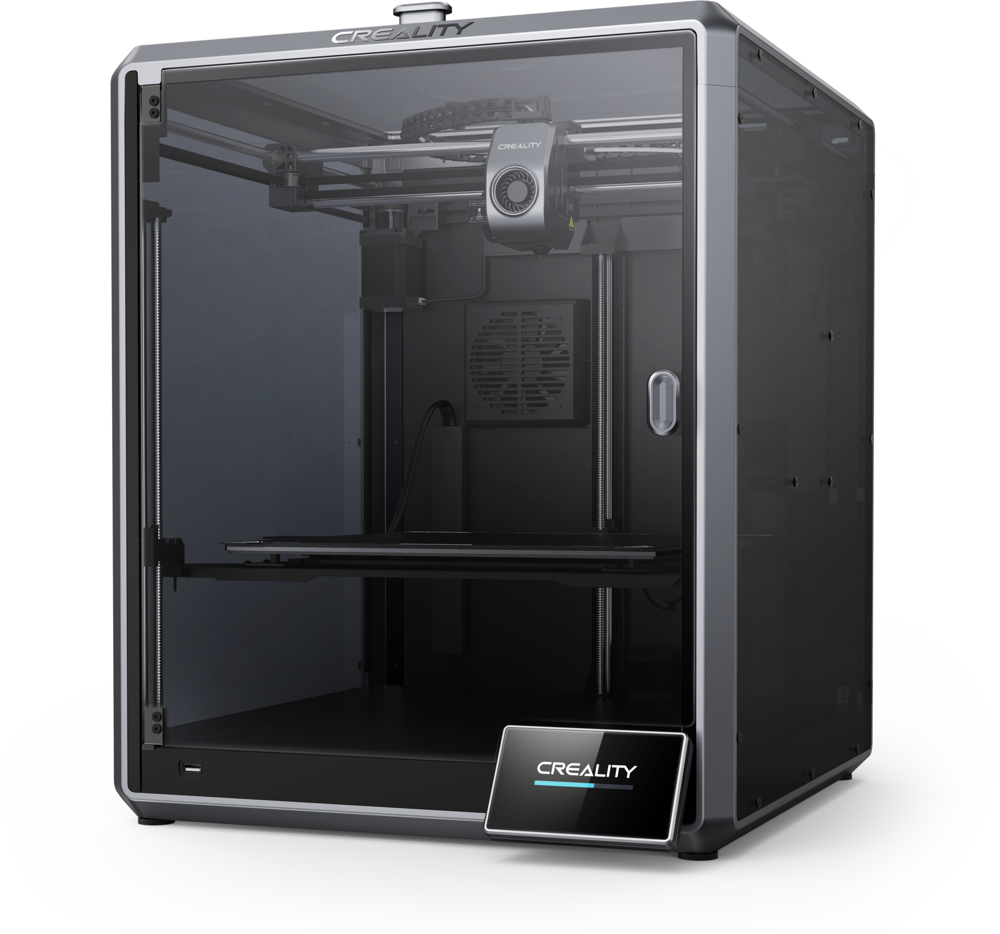
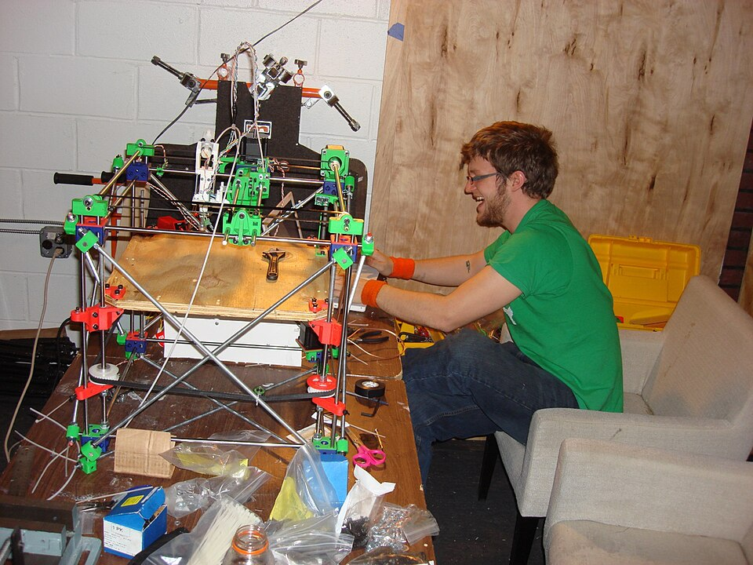
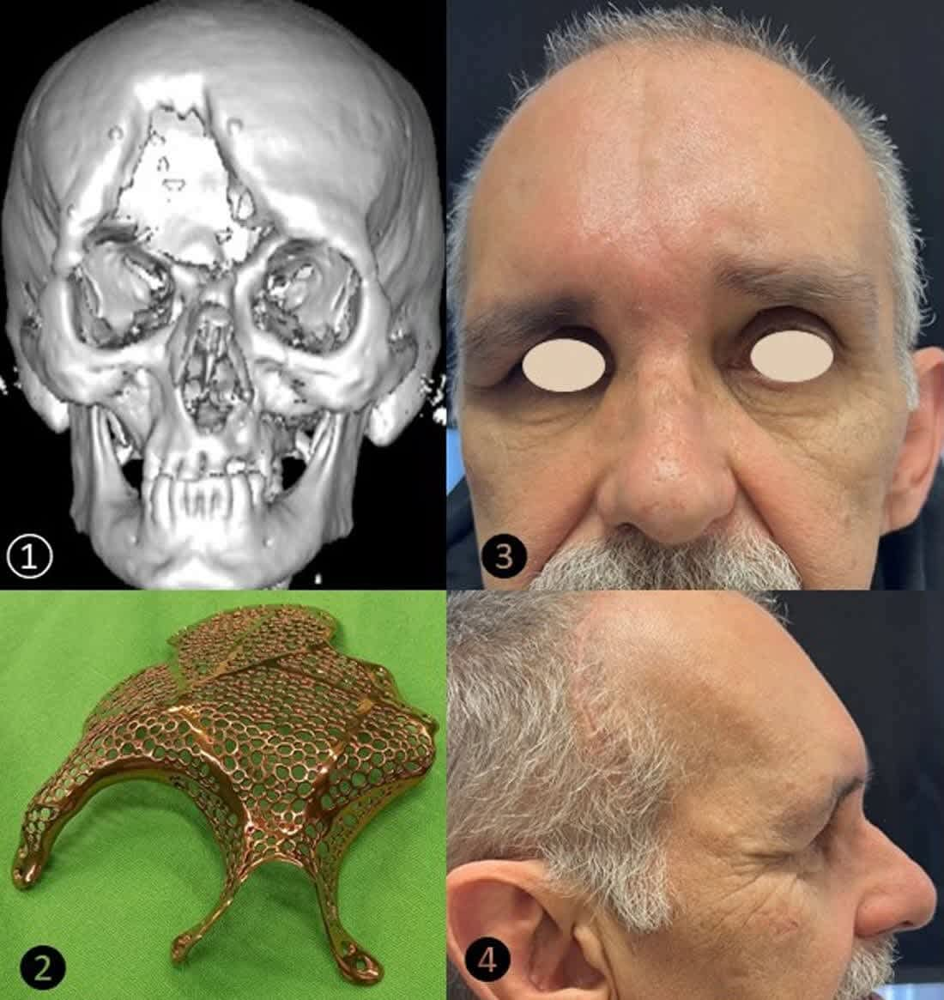

Описание и устройство 3D-принтера
История создания и эволюция аддитивных технологий

Технологии аддитивного производства зародились еще в 1980-х годах. Отцом современной 3D-печати по праву считается Чарльз Халл , который в 1984 году запатентовал технологию стереолитографии (SLA). В то время аппараты были огромными, дорогостоящими и использовались исключительно в крупных промышленных корпорациях для быстрого прототипирования деталей.
В 1988 году Скотт Крамп изобрел другую, самую популярную на сегодняшний день технологию — моделирование методом послойного наплавления (FDM). Именно эта технология легла в основу доступных настольных 3D-принтеров.
Настоящая революция и массовое распространение 3D-принтеров начались в 2005 году благодаря проекту
RepRap

Важнейшей вехой в истории FDM-печати стал 2009 год, когда истек срок действия ключевых патентов на технологию послойного наплавления, изначально принадлежавших компании Stratasys. Это событие спровоцировало взрывной рост индустрии: на рынке появились десятки стартапов, таких как MakerBot, Ultimaker и Prusa Research. Первые потребительские устройства, хотя и были несовершенными и требовали глубоких технических знаний для калибровки и сборки, открыли путь к домашнему производству. Конструкции принтеров эволюционировали от сборки из строительных шпилек и фанеры до прочных алюминиевых профилей и прецизионных линейных направляющих.
С развитием микроэлектроники совершенствовались и вычислительные мощности 3D-принтеров. Переход от 8-битных плат на базе Arduino Mega к мощным 32-битным микроконтроллерам ARM позволил реализовывать сложные математические расчеты кинематики в реальном времени. Появление бесшумных драйверов шаговых двигателей (например, семейства TMC от Trinamic) сделало 3D-печать комфортной для использования в домашних условиях и офисах, устранив характерный высокочастотный писк при движении осей.
Функциональные элементы 3D-принтера (FDM)
Для понимания принципов работы установки необходимо изучить её основные структурные узлы. Ниже представлена интерактивная панель с описанием ключевых компонентов типичного FDM 3D-принтера.
Детали принтера:
Интерактивная карта установки
Наведите курсор на элементы 3D-принтера и нажмите ЛКМ, чтобы услышать их назначение.
Каждый из представленных узлов выполняет строго определенную функцию в процессе аддитивного производства. Экструдер — это механизм холодной протяжки, который захватывает филамент (пластиковую нить) зубчатыми колесами и с точно рассчитанным усилием проталкивает его дальше. Существуют системы Bowden, где мотор экструдера закреплен на раме (для облегчения печатающей головки), и Direct Drive, где мотор расположен непосредственно над нагревателем, что идеально подходит для печати гибкими материалами (TPU/Flex).
Хотэнд (Hotend) является сердцем 3D-принтера. Он состоит из термобарьера, который предотвращает расплавление пластика до попадания в зону нагрева, радиатора для отвода тепла, нагревательного блока с керамическим или патронным нагревателем и самого сопла (nozzle). Сопла обычно изготавливаются из латуни из-за её отличной теплопроводности, но для печати абразивными материалами (светящимися в темноте, угле- или стеклонаполненными пластиками) применяются сопла из закаленной стали, рубина или карбида вольфрама.
Кинематика и рама определяют точность позиционирования. Жесткая рама предотвращает вибрации, которые могут отразиться на стенках печатаемой детали в виде "звона" (ghosting или ringing). В традиционной декартовой кинематике ("дрыгостол", или Cartesian bedslinger) стол движется по оси Y, а печатающая головка — по осям X и Z. Это простая и надежная схема, однако большая масса движущегося стола сильно ограничивает скорость печати. В современных высокопроизводительных принтерах используются кинематики CoreXY, где стол движется только по оси Z (вверх-вниз), а легкая печатающая головка перемещается по осям X и Y за счет сложной системы ремней, приводимых в движение двумя стационарными моторами.
Флагманские решения и высокоскоростная печать: Creality K1
Ярким представителем новой эры FDM 3D-принтеров является модель Creality K1. Это устройство совершило качественный скачок в индустрии потребительской 3D-печати, переведя фокус с простого наплавления на интеллектуальную, сверхскоростную и автономную работу. В основе Creality K1 лежит передовая кинематика CoreXY, объединенная с облегченной печатающей головкой, вес которой составляет всего около 190 граммов. Такая архитектура позволяет принтеру достигать потрясающей скорости печати до 600 мм/с и невероятного ускорения в 20 000 мм/с², что сокращает время создания деталей в несколько раз по сравнению со стандартными принтерами.
Ключевой особенностью серии K1 является использование оптимизированной прошивки на базе Klipper. В отличие от традиционного Marlin, где все вычисления происходят на слабой плате самого принтера, архитектура Klipper переносит тяжелые математические расчеты генерации траекторий на более мощный процессор. Это позволяет реализовать алгоритмы Input Shaping (компенсация резонансов) и Pressure Advance. В печатающую головку Creality K1 встроен G-сенсор (акселерометр), который измеряет резонансные частоты рамы по осям X и Y перед началом печати. Затем микроконтроллер генерирует анти-вибрационные сигналы, гасящие колебания механики. Результат — идеально ровные стенки моделей даже на экстремально высоких скоростях без малейших признаков "эха" на углах.
Экструзионная система K1 также была полностью переработана для обеспечения необходимого потока пластика (Flow Rate) на высоких скоростях. Хотэнд оснащен кольцевым керамическим нагревателем мощностью 60 Вт, который равномерно опоясывает нагревательный блок, разогревая сопло до 200°C всего за 40 секунд. Максимальный объемный расход пластика (Max Volumetric Flow) достигает 32 мм³/с. Экструдер типа Direct Drive с двойным зубчатым зацеплением (Dual-gear) развивает усилие выдавливания до 50 Ньютонов, обеспечивая надежную подачу нити без проскальзывания. Сопло выполнено из медного сплава с титановым термобарьером, что позволяет стабильно печатать при температурах до 300°C.
Поскольку расплавленный пластик на скорости 600 мм/с не успевает остыть естественным путем, в Creality K1 внедрена агрессивная система охлаждения. На самой печатающей головке установлен мощный турбинный вентилятор (Part cooling fan) с направленным воздуховодом. Дополнительно, на боковой стенке печатной камеры смонтирован огромный вспомогательный вентилятор мощностью 18 Вт, создающий мощный поток холодного воздуха поперек печатной платформы. Это позволяет моментально замораживать слои пластика, что критически важно для печати сложных нависающих элементов и мостов без использования поддерживающих структур.
Не менее важным аспектом является полностью закрытый корпус (Enclosure). Creality K1 поставляется с акриловыми дверцами и тонированным верхним колпаком. Изолированная камера позволяет удерживать тепло внутри, создавая идеальный микроклимат для работы с инженерными пластиками, подверженными сильной термоусадке (ABS, ASA, Polycarbonate, Nylon). Без закрытой камеры эти материалы неравномерно остывают, что приводит к отлипанию модели от стола (деформации углов) или растрескиванию модели по слоям. Дополнительным бонусом закрытой конструкции является значительное снижение уровня шума во время высокоскоростной работы.
Калибровка печатной платформы в Creality K1 происходит полностью автоматически (Hands-free auto leveling). В саму платформу встроены тензодатчики (Strain gauges), которые с микронной точностью регистрируют момент касания соплом поверхности стола. Принтер генерирует точную сетку высот и автоматически компенсирует любые неровности поверхности во время печати, корректируя положение оси Z. Платформа выполнена из гибкой пружинной стали с PEI (полиэфиримидным) покрытием, обеспечивающим отличную адгезию первых слоев и легкое снятие готовых моделей после остывания.
Сферы применения

Современные 3D-принтеры вышли далеко за рамки создания пластиковых брелоков. Сегодня это мощный производственный инструмент, который меняет целые индустрии.
Медицина: Печать индивидуальных протезов, стоматологических кап, имплантатов костей, анатомических моделей для подготовки к сложным операциям. Ведутся активные исследования в области биопечати — создания живых тканей и органов из клеток пациента. С появлением биосовместимых смол и пластиков хирурги могут отсканировать поврежденную кость на МРТ, напечатать ее точную пластиковую копию и заранее спланировать хирургическое вмешательство, что значительно сокращает время пребывания пациента под наркозом.
Машиностроение и аэрокосмическая отрасль: Производство сложных, облегченных деталей, которые невозможно изготовить традиционными методами литья или фрезеровки. Например, форсунки реактивных двигателей печатаются из металла как единая монолитная деталь. Технологии топологической оптимизации в сочетании с 3D-печатью позволяют создавать кронштейны для самолетов и спутников, которые весят в несколько раз меньше аналогов при сохранении той же прочности. Также печать незаменима для создания кастомных креплений, зажимов и оснастки на сборочных линиях автоконцернов.
Архитектура и строительство: Печать макетов зданий и целых жилых домов с использованием гигантских строительных принтеров, выдавливающих специальную бетонную смесь. Это направление позволяет возводить базовый каркас дома буквально за 24 часа с минимальным привлечением человеческого труда. Кроме того, архитекторы могут легко переносить сложные CAD-модели в физические макеты для презентации заказчикам, демонстрируя элементы фасада с высокой степенью детализации.
Образование и дизайн: Создание наглядных учебных пособий, прототипирование корпусов электроники, ювелирное дело и создание предметов искусства. Инженеры-конструкторы и промышленные дизайнеры могут пройти цикл от чертежа на экране монитора до физического объекта в руках всего за пару часов, проверяя эргономику будущего изделия. В кинематографе и индустрии косплея 3D-принтеры активно используются для создания реалистичного реквизита, оружия и элементов брони, отличающихся малым весом и высокой детализацией.
Ремонт и импортозамещение: С помощью 3D-печати можно легко восстановить сломанные шестерни бытовой техники, защелки автомобильных деталей, кронштейны или редкие запчасти, производство которых давно прекращено или их доставка занимает много месяцев. Использование сверхпрочных инженерных пластиков, таких как нейлон с углеволокном (PA-CF) или поликарбонат, позволяет печатать шестерни, способные выдерживать колоссальные механические нагрузки, превосходящие заводские аналоги из обычного ABS или POM.